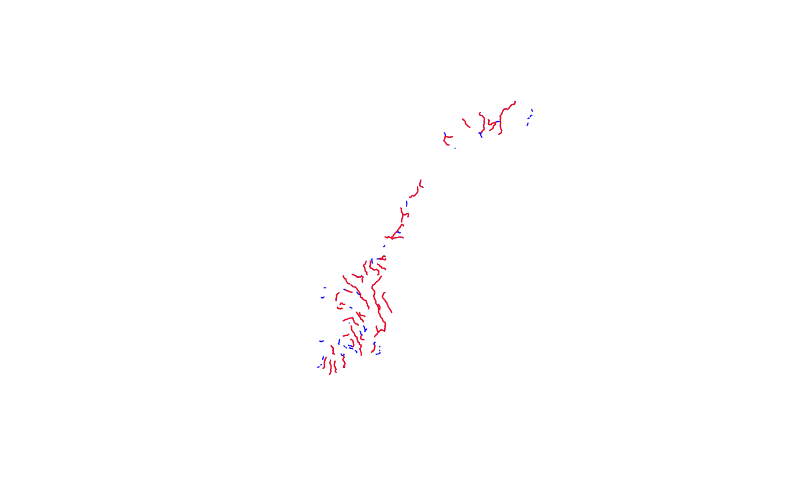
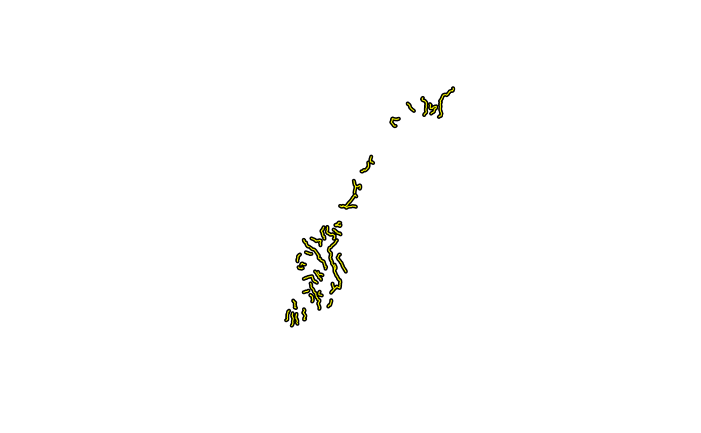
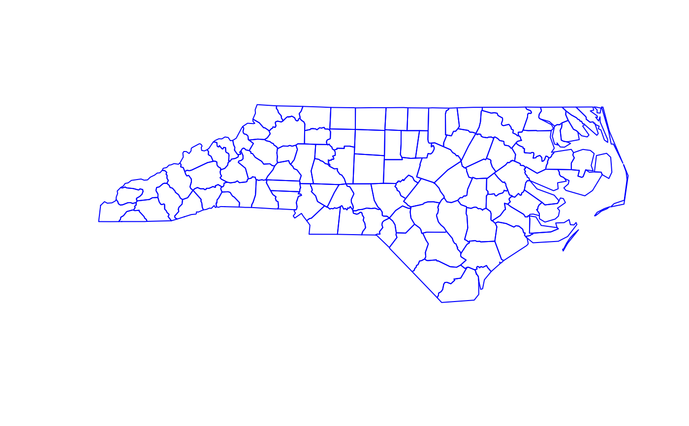

readShapeLines.RdThe use of this function is deprecated and it is not being maintained. Use rgdal::readOGR() or sf::st_read() instead - both of these read the coordinate reference system from the input file, while this deprecated function does not. For writing, use rgdal::writeOGR() or sf::st_write() instead.
The readShapeLines function reads data from an arc/line shapefile into a SpatialLinesDataFrame object; the shapefile may be of type polygon, but for just plotting for example coastlines, a SpatialLines object is sufficient. The writeLinesShape function writes data from a SpatialLinesDataFrame object to a shapefile. Note DBF file restrictions in write.dbf.
readShapeLines(fn, proj4string=CRS(as.character(NA)), verbose=FALSE, repair=FALSE, delete_null_obj=FALSE) writeLinesShape(x, fn, factor2char = TRUE, max_nchar=254)
| fn | shapefile layer name, when writing omitting the extensions *.shp, *.shx and *.dbf, which are added in the function |
|---|---|
| proj4string | Object of class |
| verbose | default FALSE - report type of shapefile and number of shapes |
| repair | default FALSE: some shapefiles provided by Geolytics Inc. have values of object sizes stored in the *.shx index file that are eight bytes too large, leading the function to try to read past the end of file. If repair=TRUE, an attempt is made to repair the internal values, permitting such files to be read. |
| delete_null_obj | if TRUE, null geometries will be removed together with their data.frame rows |
| x | a |
| factor2char | logical, default TRUE, convert factor columns to character |
| max_nchar | default 254, may be set to a higher limit and passed through to the DBF writer, please see Details in |
The shpID values of the shapefile will be used as Lines ID values; when writing shapefiles, the object data slot row.names are added to the DBF file as column SL\_ID.
a SpatialLinesDataFrame object
xx <- readShapeLines(system.file("shapes/fylk-val.shp", package="maptools")[1], proj4string=CRS("+proj=utm +zone=33 +datum=WGS84"))#> Warning: readShapeLines is deprecated; use rgdal::readOGR or sf::st_readsummary(xx)#> Object of class SpatialLinesDataFrame #> Coordinates: #> min max #> x -4867.832 1084722 #> y 6456207.000 7841997 #> Is projected: TRUE #> proj4string : #> [+proj=utm +zone=33 +datum=WGS84 +ellps=WGS84 +towgs84=0,0,0] #> Data attributes: #> FNODE_ TNODE_ LPOLY_ RPOLY_ #> Min. : 1.00 Min. : 2.00 Min. :1.00 Min. :1.00 #> 1st Qu.: 40.00 1st Qu.: 39.00 1st Qu.:2.00 1st Qu.:2.00 #> Median : 74.00 Median : 77.00 Median :2.00 Median :2.00 #> Mean : 77.62 Mean : 77.55 Mean :1.99 Mean :1.99 #> 3rd Qu.:115.00 3rd Qu.:114.00 3rd Qu.:2.00 3rd Qu.:2.00 #> Max. :160.00 Max. :159.00 Max. :2.00 Max. :2.00 #> LENGTH VALINJE_ VALINJE_ID LTEMA VANNBR #> Min. : 106.4 Min. : 1 Min. : 55.00 Min. :3211 Min. :13 #> 1st Qu.: 11866.5 1st Qu.:25 1st Qu.: 74.00 1st Qu.:3211 1st Qu.:13 #> Median : 31910.9 Median :49 Median : 95.00 Median :3211 Median :13 #> Mean : 41374.7 Mean :49 Mean : 94.32 Mean :3211 Mean :13 #> 3rd Qu.: 59311.8 3rd Qu.:73 3rd Qu.:114.00 3rd Qu.:3211 3rd Qu.:13 #> Max. :176540.1 Max. :97 Max. :135.00 Max. :3211 Max. :13 #> DATO #> Min. :19970630 #> 1st Qu.:19970630 #> Median :19970630 #> Mean :19970630 #> 3rd Qu.:19970630 #> Max. :19970630#> Warning: writeLinesShape is deprecated; use rgdal::writeOGR or sf::st_write#> Shapefile type: PolyLine, (3), # of Shapes: 51axx <- readShapeLines(tmpfl, proj4string=CRS("+proj=utm +zone=33 +datum=WGS84"))#> Warning: readShapeLines is deprecated; use rgdal::readOGR or sf::st_readunlink(paste(tmpfl, ".*", sep="")) xx <- readShapeLines(system.file("shapes/sids.shp", package="maptools")[1], proj4string=CRS("+proj=longlat +datum=NAD27"))#> Warning: readShapeLines is deprecated; use rgdal::readOGR or sf::st_read